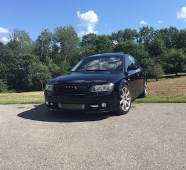
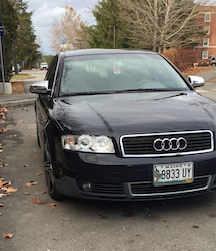
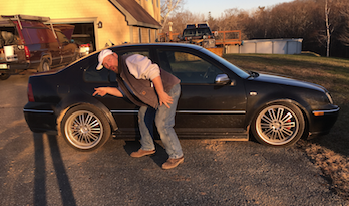

  
Cars are a funny thing. Most people think of them as a piece of technology that gets them from point A to point B. It has a motor, a gas pedal, some oil...etc. That's how I used to feel, until I dated a car guy. He got me hooked into the world of cars. I had an old, beat up Subaru outback that my parents had gifted me as my first car. The "green bean", as I so fondly named it. The days of practical wagons were soon over, though. I bought my first project car, a gray Audi A4, for $500 in Southern Maine. It didn't run due to a blown head gasket. No biggie, said my then boyfriend. We bought the car, and somehow managed to lie to AAA and say that it had broke down on the side of the road. We had it towed home, and a month later, it was up and running. This car was also a manual, which I had yet to learn how to drive. Let's just say after lots of stalling and a burning clutch (and maybe a several tears of frustration), I got the hang of it. A friend of a friend offered to buy the car off of me for $2600, and I happily agreed to the deal. Next was a newer, automatic navy A4 that was in gorgeous condition. We drove all the way to Vermont to buy that car, for just $1900. Why so cheap? Now, I would investigate further, but my then boyfriend said not to worry about it. Later on, it turned out the frame was absolutely horrible. It must've been in a rough accident. I immediately put it up on Craigslist, and got offered a trade for a Volkswagen Jetta GLI. What a fun car. Fast, yet a rolling piece of rust. I will always look back fondly on that car. I ended up selling it due to body work that I was not willing to put money into. With the $4200 I got from that sale, I purchased yet another Audi A4 for $3600 from a small dealership in New Hampshire. Funny thing is, the car was in "limp mode" due to a bad oil sensor. Limp mode is basically a protection feature that prevents a car from revving over 3000 rpms if there is something amiss. That car ran like garbage the whole way home, as I was trying to keep up with my then boyfriend who was driving like Mario Andretti. Long story short, I still have this car to this day (but not the boyfriend). It runs a whole lot better but still needs a lot of work... especially now that I hit a deer last week. :)